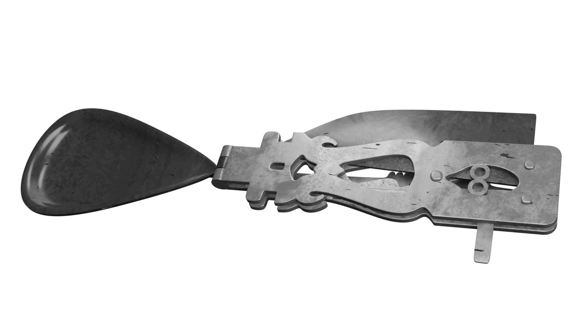
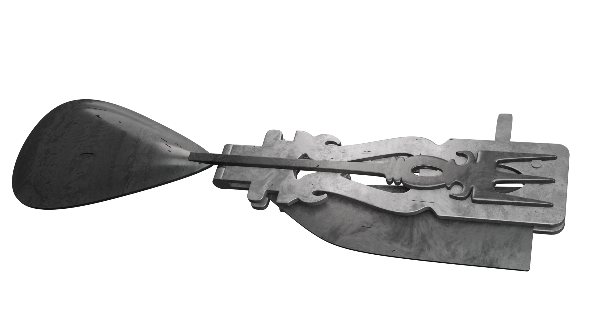
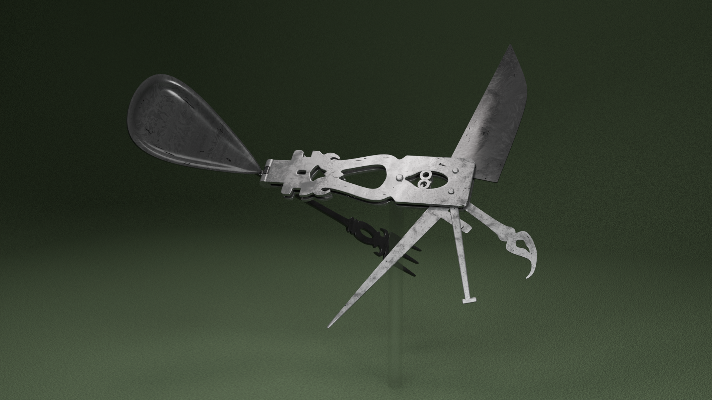
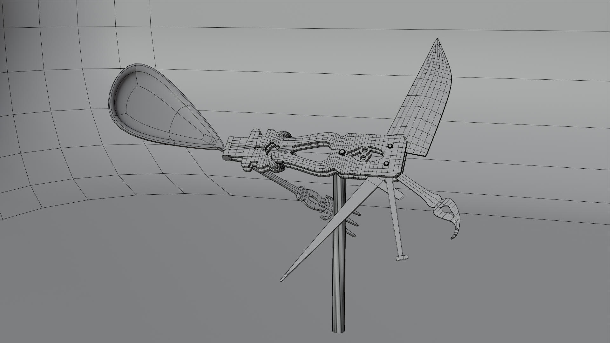

When for a class project we were tasked with creating "cutlery", I set out to find the most esoteric example I could. This authentic ancient oddity - residing within the Fitzwilliam Museum - looks almost anachronistic when imagined in its original setting.

More broadly, this piece showcases my ability to convincingly recreate artifacts from only a small handful of freely available photographs. Care has been taken to enable all parts to move and fold realistically, making sure the geometry doesn't clip or otherwise impede animate-ability.

I deliterately chose to showcase this piece as if it were sitting in a museum display instead of in a Roman home as such a curiosity would truly seem unrealistically modern in its "intended" period. Ultimately, this head-turner offers a glimpse into what innovations humanity needed two millennia ago; not too dissimilar to tools still in-vogue today.

